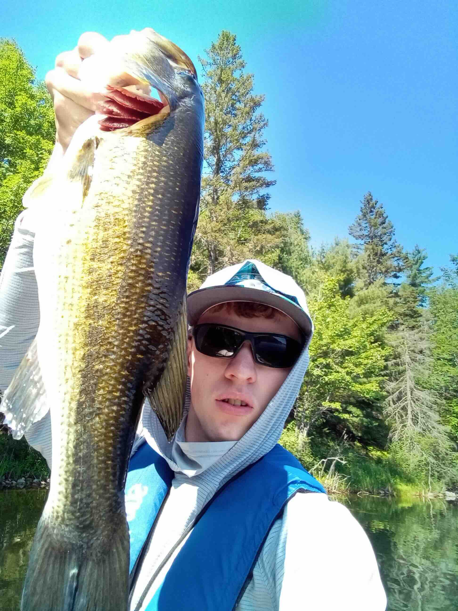

Bass Raft is proudly manufactured in the USA, right here in west central Wisonsin. Each Bass Raft is hand crafted and precision tuned to be light and strong, ready for as many days on the water as you are.
Bass Raft is proudly manufactured in the USA, right here in west central Wisonsin. Each Bass Raft is hand crafted and precision tuned to be light and strong, ready for as many days on the water as you are.
Bass Raft comes to you via an upstart couple of Wisconsin fisherman with a different vision for kayak fishing. We've built a mashup of bass boat deck and kayak, a super lightweight and stable platform designed so you can fish all day standing up.
What started as a Sunday afternoon conversation about composite construction, turned into an obsession to build the best fishing platform the world has ever seen. If you forget that you are NOT on the deck of a boat, lightly cruising around a lake, through shallows, quietly creeping up on a dock, you know we've succeeded in our goal.
Stand up and fish,
Joey, the builder guy 
Tony, the money man
Bass Raft is proudly manufactured in the USA, right here in west central Wisonsin. Each Bass Raft is hand crafted and precision tuned to be light and strong, ready for as many days on the water as you are.